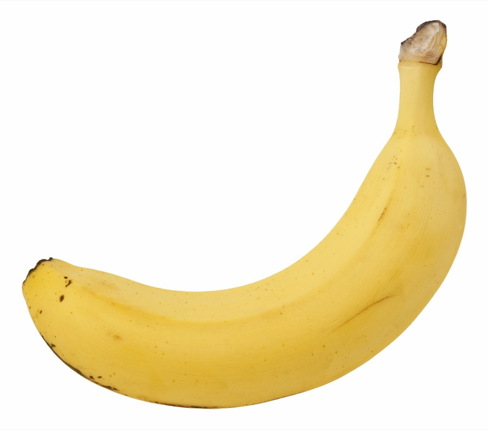

Vsebina te strani je prevedena in prirejena po članku Banana equivalent dose na angleški Wikipediji.

Banana vsebuje naravno radioaktivni kalij-40. Foto: Evan-Amos, CC BY-SA 3.0
Ekvivalentna doza banane (angl. banana equivalent dose, BED) je neformalna enota za izpostavljenost ionizirajočemu sevanju. Z njo dozo sevanja primerjamo z dozo, ki jo prejmemo, če pojemo eno banano povprečne velikosti. Banane namreč vsebujejo naravno radioaktivni izotop kalij-40. En BED je približno 0,1 mikrosieverta (μSv). Enota je namenjena izobraževanju in ni uradno sprejeta.
Izvor zamisli ni znan. Ena prvih omemb je iz leta 1995 z dopisnega seznama RadSafe o jedrski varnosti, kjer je Gary Mansfield iz laboratorija Lawrence Livermore zapisal, da mu ekvivalentna doza banane zelo pomaga, ko javnosti razlaga zanemarljivo majhne doze in prav tako majhna tveganja. Za banano z maso 150 g je predlagal vrednost približno 0,1 μSv.
Ekvivalentna doza banane je neformalna enota, zato so vse primerjave le približne. Doza, ki jo prejmemo z eno banano, je približno odstotek povprečne dnevne izpostavljenosti sevanju iz okolja. Spodnja tabela primerja nekaj doz.
| Vir sevanja | Doza | Število banan |
|---|---|---|
| Ena banana | 0,1 μSv | 1 |
| Povprečna dnevna izpostavljenost sevanju iz okolja | 10 μSv | 100 |
| Bivanje 16 km od jedrske elektrarne Three Mile Island med nesrečo leta 1979 | 80 μSv | 800 |
| Največja dovoljena letna doza zaradi izpustov iz jedrske elektrarne | 250 μSv | 2 500 |
| Računalniška tomografija prsnega koša | 7 mSv | 70 000 |
| Smrtna doza | 3,5 Sv | 35 000 000 |
Več virov opozarja, da je zamisel pomanjkljiva, ker banana ne poveča naše izpostavljenosti radioaktivnemu kaliju. Količina kalija, in s tem kalija-40, v človeškem telesu je zaradi homeostaze skoraj stalna: presežek, ki ga zaužijemo s hrano, telo hitro izloči z urinom. Dodatna izpostavljenost po zaužiti banani zato traja le nekaj ur, dokler ledvice spet ne vzpostavijo običajne količine kalija.
Za primerjavo: odrasel človek z maso 70 kg ima v telesu približno 175 g kalija, v katerem vse življenje vsako sekundo razpade okoli 5 400 jeder.
Veliko kalija, in s tem kalija-40, vsebujejo tudi krompir, fižol, sončnična semena in oreščki. Brazilski oreščki poleg kalija vsebujejo tudi precej radija: izmerili so ga do 444 Bq/kg. Tobak vsebuje sledove torija, polonija in urana, sušenje in kajenje pa jih še zgostita.